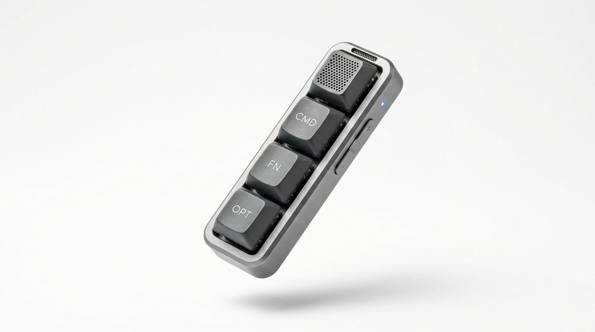
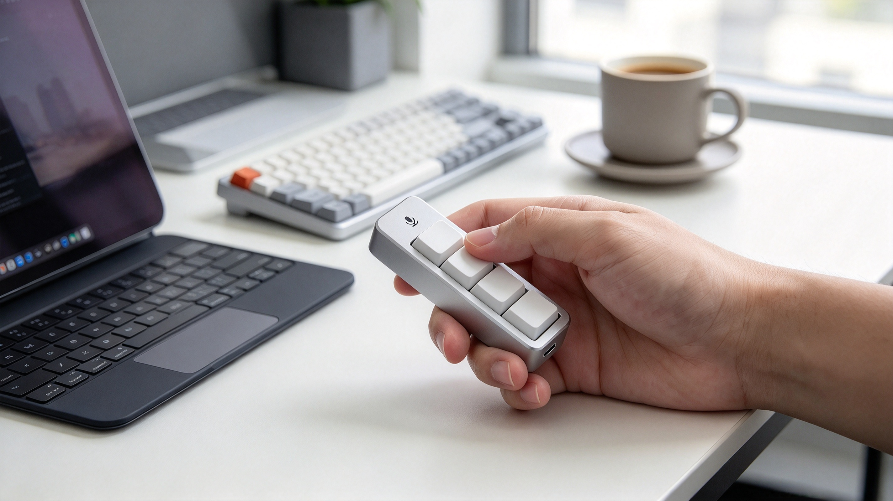
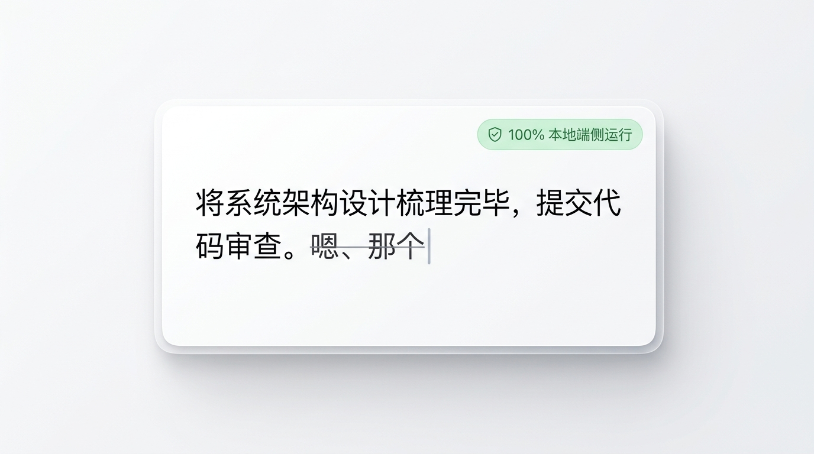
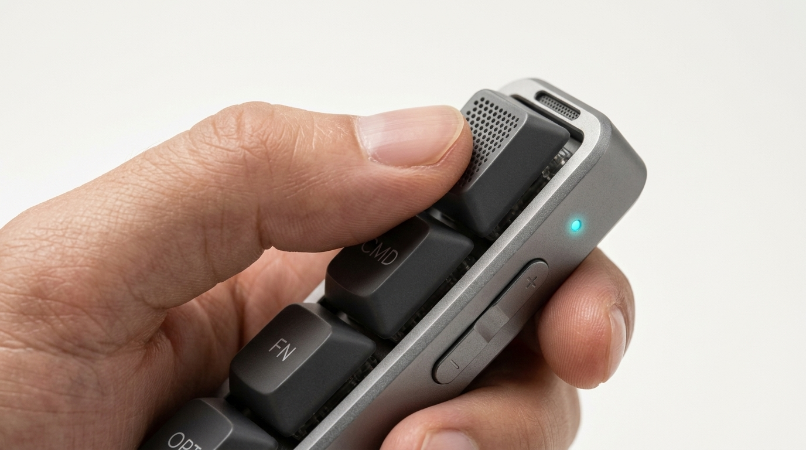
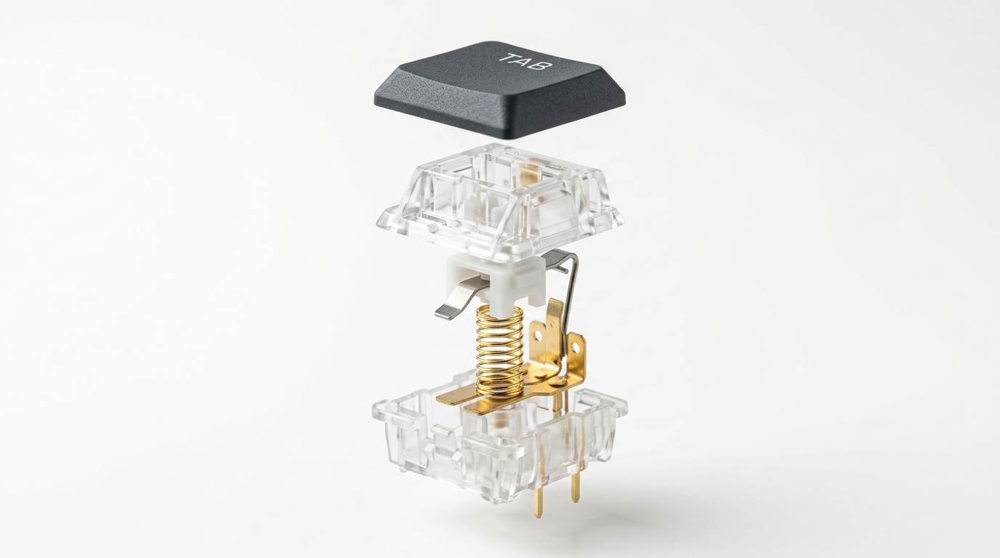
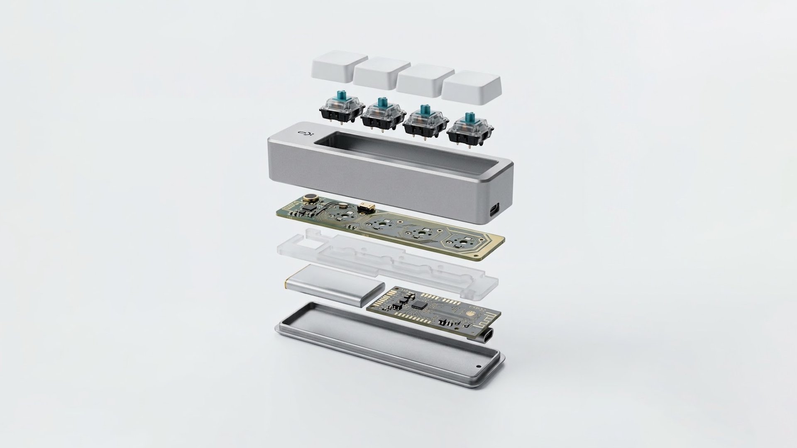
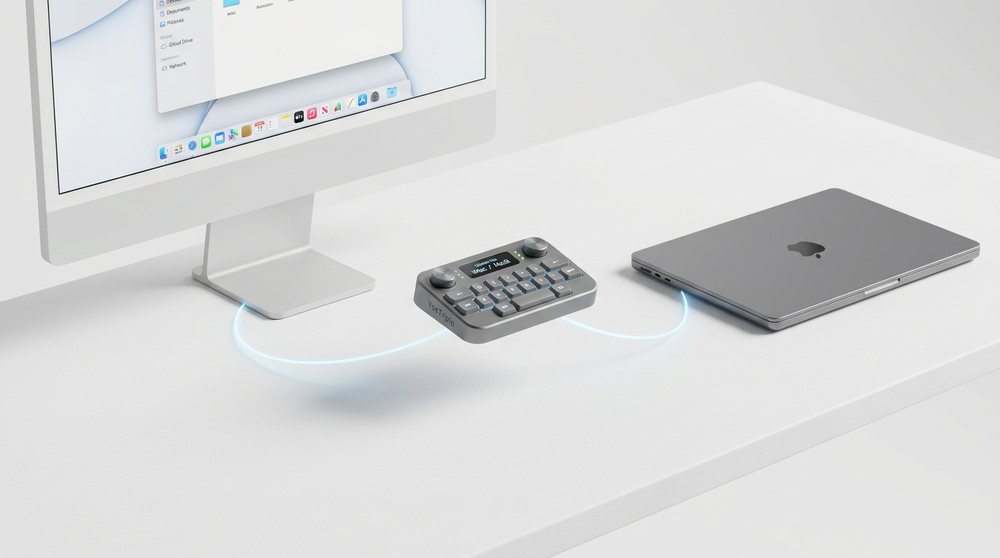
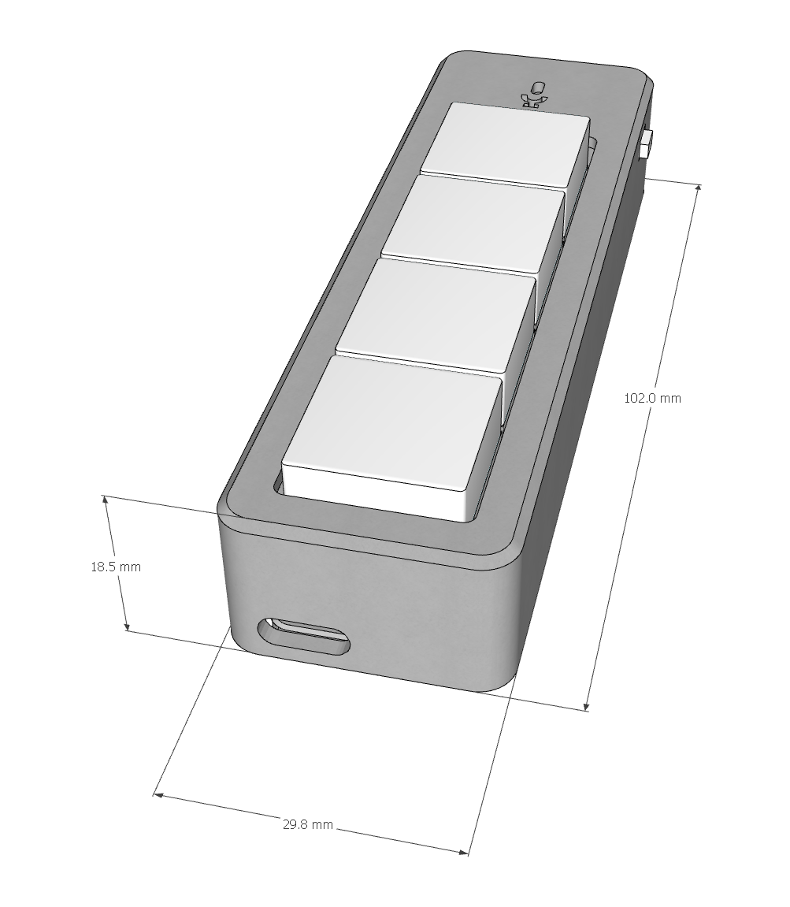
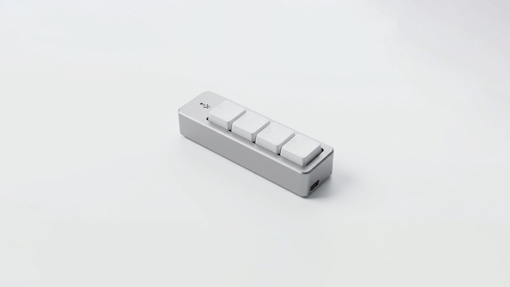

把思考的速度，
提至三倍。
打字太慢，可灵感不等人。
VoxTriple 将高灵敏数字硅麦克风与凯华客制化机械矮轴融于掌心，按住即说，随时向 AI 发起对话。

为什么你的台式电脑，
总缺这一支？
进入 AI 时代，与大模型的高频沟通早已成为日常。但手头的设备，却往往在一次次繁琐中磨灭了你的灵感。

主机没有麦，开会到处翻耳机
性能拉满的工作台式机，出厂偏偏没有收音孔。临时要对 AI 说话或开会，还得把缠成一团的耳机线翻出来插上，线缆缠绕，极其累赘。
键盘敲到手酸，脑中的思路却断了
给大模型梳理需求、写方案，动辄几百上千字。手指在机械键盘上噼里啪啦敲半天，手腕发酸，原本兴奋连贯的思考节奏早被磨没了。
桌面播音麦克风，把人死死钉在桌前
桌面大麦克风必须探着身子低头凑近才能收清声音。伏案正襟危坐一整天，肩膀僵直，脖子像打了石膏一样酸痛难忍。
软件开麦迟缓，随时担心开麦社死
屏幕上的软开关按钮偶尔卡顿，以为闭麦了其实还在录，极易发生开麦事故；或者误录进周围环境音，导致转写全篇乱码。
断网也能用。
文字在光标处自然倾泻。
不需要连外网，也不用担心隐私被传到云端。在高铁隧道、保密机房，或者任何没网的角落，按下就能飞速出字。

100% 本地运算，商业机密绝不上云
本地端侧轻量语音大模型直接在电脑端执行，零网络延迟，更从源头上杜绝了代码、财务数据或核心构思被上传云端训练的隐私隐患。
自动抹去语气词，智能添加标点
说话时随口带出的“嗯、啊、那个、就是”，系统在本地自动过滤抚平；根据语义停顿智能加好逗号句号。说完了，屏幕上直接就是整洁的书面语。
清脆的咔嗒声，
听得见的解压感。
精选凯华客制化有声段落机械矮轴，拥有高达 5000 万次寿命。
按压伴随悦耳清脆的机械声，不仅是高灵敏的输入终端，更是你伏案焦躁时随手拿在手里按着玩的 EDC 解压神器。


大拇指自然搭在轴体上，按压伴随咔嗒清脆手感，硬件开启收音，从容自然口述。
语速高达 300 字/分，文字在光标处飞速倾泻，大段长文与需求几秒完成。
机械轴弹起硬件立即静音，顺势一按预设的机械回车轴，Prompt 瞬间直发 AI。
细腻不打油，
两台设备一键穿梭。
拒绝廉价塑料的妥协。客制化级耐磨材质，结合彻底摆脱接收器的纯正蓝牙双模。

细腻微磨砂，久用不留油光
普通廉价 ABS 键帽用几个月就发黏打滑、油光发亮。VoxTriple 标配 PBT 键帽，表层带有细腻干爽的微磨砂触感，长久使用绝不打油、不褪色，耐脏耐磨。

两台设备，一键穿梭切换
没有拖泥带水的线缆，更彻底摒弃极易弄丢的 2.4G 接收器。内置双通道记忆，一台配主力台式机，一台配随身笔记本，轻点按键瞬间秒速切换。
换个姿势，
灵感才打得开。
写了一整天代码和文档，脖子僵硬了？
把它捏在手里靠在工位椅背上伸个大懒腰，嘴里念叨两句，大段需求和架构就已经打在屏幕上了。
或者站起来在白板前走两步，甚至窝进书房的沙发里——思维在奔跑，身体很放松。

极致纤薄。采用轻薄高密度聚合物电芯，厚度比普通圆柱电池大幅缩减，握在手心宛如一支优雅的签字笔。
掌心黄金跨度。大拇指无需过度张开即可轻松盲操全部按键，轻盈塞入口袋毫无下坠感。
待机整整一周。
常用常新的极客生命力。
轻量聚合物电芯与低功耗深度休眠，时刻待命。搭配自由宏映射与极速 OTA 固件进化。

随时拿起秒级唤醒，出差一周无需带充电器。
支持绑定 Ctrl+C/V、Win+H、一键截图或专属工作流。
云端新固件持续推送新玩法与 AI 工具链联动，越用越趁手。
工位后仰。咖啡馆低语。自由。
无论是深夜极客书房，还是喧嚣都市中的咖啡馆角落，都优雅自如。
.jpeg)
背靠人体工学椅，手握终端从容向 AI 表达系统设计思路。
.jpeg)
数字硅麦近场拾音，轻声细语即可完成邮件与长文口述。
详细硬件规格
© 2026 VoxTriple Project. 致力于让每一次发声与指令都纯净优雅。